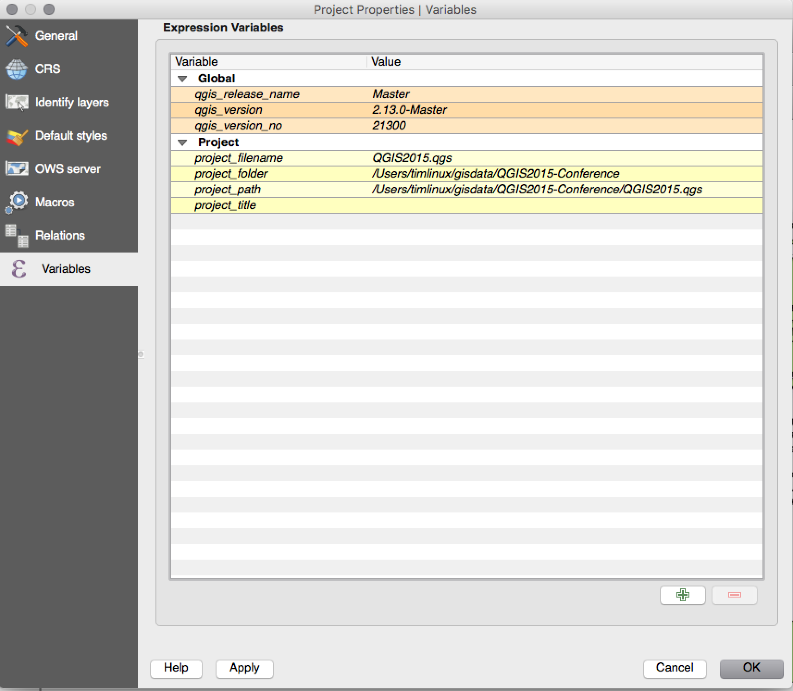
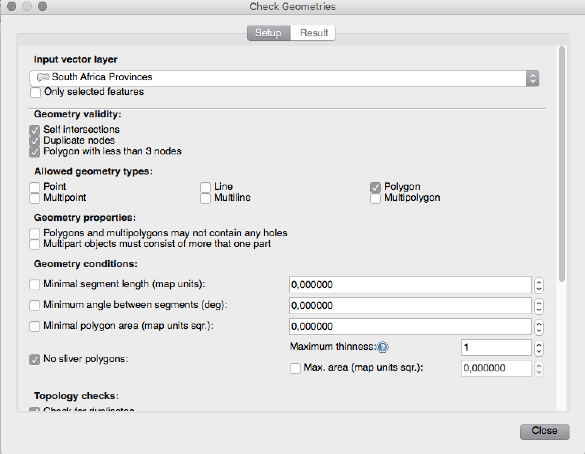
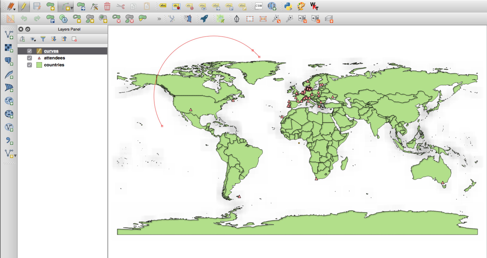
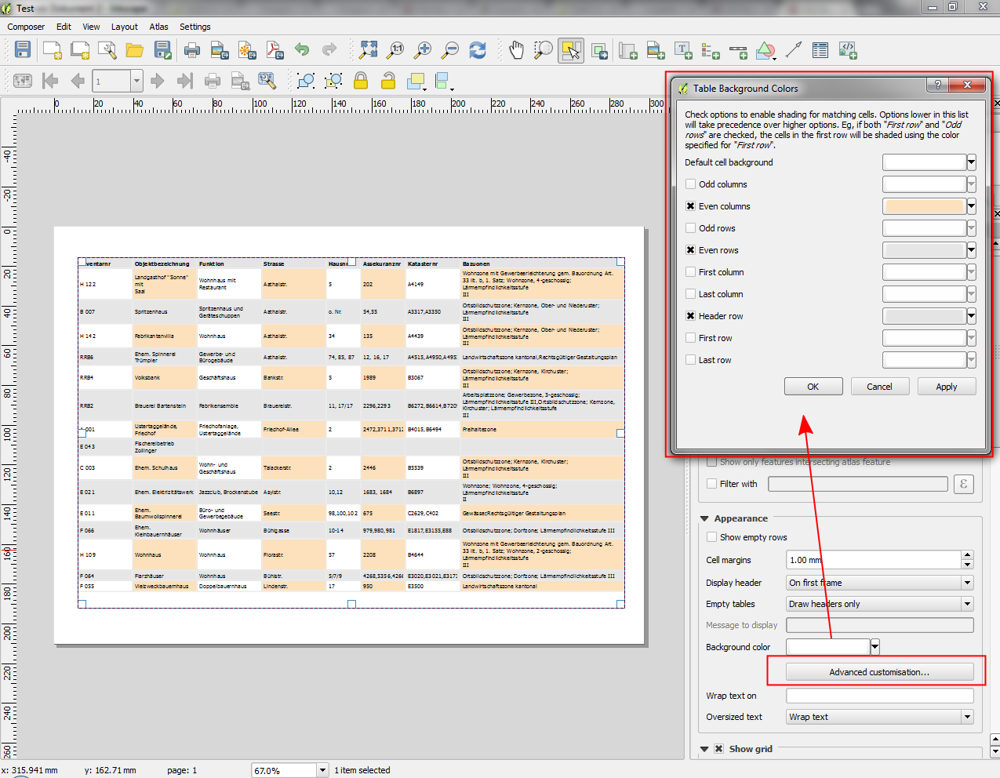
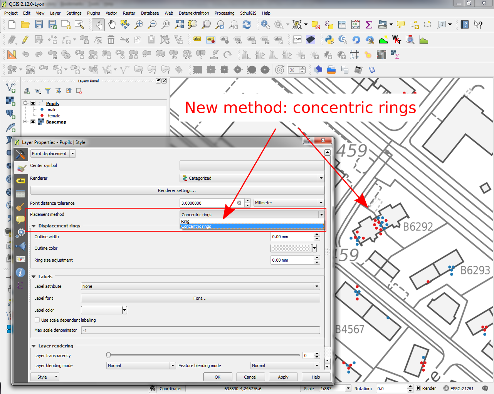

Modifications apportées par QGIS 2.12¶

Voici le journal des modifications de la dernière version de QGIS - version 2.12.0 “Lyon” - ville hôte de notre rencontre des développeurs en Avril 2012.
Nouvelles Fonctionnalités dans QGIS 2.12 “Lyon”
Cette version est la prochaine de notre cycle de version intervenant tous les 4 mois. Elle vous permet d’avoir accès aux dernière fonctionnalités sur lesquels nous travaillons et constitue la dernière version à la pointe des développements de Qgis.
Qgis “Lyon” embarque de nouvelles fonctionnalités. Les principales sont le support de règles d’affichage pour les étiquettes, des règles d’affichage pour les tables d’attributs, le gestionnaire avancé de géométrie, la création et l’édition de courbes géométriques, une meilleure gestion des authentifications et plus encore ! Par ailleurs, de nombreux bogues ont été corrigés dont les fuites de mémoire dans QGIS 2.12. Les fonctionnalités présentes dans cette version seront inclues dans la prochaine version long terme (qui sortira en 2016), l’utiliser est une bonne occasion de tester ces nouvelles fonctionnalités
Quand une nouvelle fonctionnalité est ajoutée au logiciel, cela peut entraîner la possibilité de nouveaux bogues. Si vous rencontrez un problème avec cette version, vous pouvez remplir un ticket sur le QGIS Bug Tracker. Si vous travailler dans un environnement de production où la stabilité prime sur la nouveauté, nous fournissions aussi une version à long terme (LTR: Long Term Release) de QGIS. La version actuelle est la 2.8.3 est est disponible sur download.qgis.org.
Merci
Nous souhaitons remercier tous les développeurs, rédacteurs, testeurs et les nombreuses personnes qui ont donné volontairement de leur temps (ou financé des personnes pour le faire).
From the QGIS community we hope you enjoy this release! If you wish to donate time, money or otherwise get involved in making QGIS more awesome, please wander along to qgis.org and lend a hand!
Enfin, nous souhaitons remercier nos sponsors officiels pour leurs soutiens financiers inestimables à ce projet :
- Sponsor GOLD : Asia Air Survey, Japon
- Sponsor ARGENT: AGH University of Science and Technology, Krakow, Pologne
- Sponsor SILVER : State of Vorarlberg, Austria
- Sponsor SILVER: Office of Public Works, Irlande, Irlande
- Sponsor SILVER : Sourcepole AG, Suisse
- Sponsor BRONZE: Lutra Consulting, UK
- Sponsor BRONZE: WhereGroup GmbH & Co. KG, Allemagne
- Sponsor BRONZE: Nicholas Pearson Associates, Royaume-Uni
- Sponsor BRONZE: QGIS Poland, Pologne
- Sponsor BRONZE: www.terrelogiche.com, Italie
- Sponsor BRONZE: GeoSynergy, Australia
- Sponsor BRONZE : Gaia3D, South Korea
- Sponsor BRONZE: Royal Borough of Windsor and Maidenhead, UK
- Sponsor BRONZE : Chartwell Consultants Ltd, Canada
- Sponsor BRONZE : Trage Wegen vzw, Belgium
- Sponsor BRONZE : GFI - Gesellschaft fr Informations technologie mbH, Germany
- Sponsor BRONZE: GKG Kassel, (Dr.-Ing. Claas Leiner), Allemagne
- Sponsor BRONZE : GIS-Support, Pologne
- Sponsor BRONZE: ADLARES GmbH, Allemagne
- Sponsor BRONZE : www.molitec.it, Italy
- Sponsor BRONZE : www.argusoft.de, Germany
- Sponsor BRONZE: Customer Analytics, USA
- Sponsor BRONZE: Avioportolano Italia, Italie
- Sponsor BRONZE : Faculty of Geology, Geophysics and Environmental Protection, AGH, University of Science and Technology, Poland
- Sponsor BRONZE: Urbsol, Australie
- Sponsor BRONZE: MappingGIS, Espagne
- Sponsor BRONZE : GIS3W, Italy
A current list of donors who have made financial contributions large and small to the project can be seen on our donors list. If you would like to become and official project sponsor, please visit our sponsorship page for details. Sponsoring QGIS helps us to fund our six monthly developer meetings, maintain project infrastructure and fund bug fixing efforts.
QGIS est un logiciel libre et vous n’avez aucune obligation de payer quoi que ce soit pour l’utiliser. En fait, nous souhaitons encourager les gens à l’utiliser le plus possible, sans s’intéresser à leur état financier ou à leur statut social. Nous croyons que fournir aux gens des outils décisionnels spatiaux permettra d’améliorer la société.
- Général
- Fonctionnalité : Nouvel écran de bienvenue
- Fonctionnalité : amélioration continue de la qualité de code
- Fonctionnalité : Éditeur avancé de paramètres
- Fonctionnalité : groupes de couches mutuellement exclusive
- Fonctionnalité : Filtre des valeurs de champs dans les boites d’expression
- Fonctionnalité : gestion des thèmes pour l’interface utilisateur
- Fonctionnalité : Nouvelles fonctions dans le générateur d’expressions
- Fonctionnalité : variables dans les expressions
- Outils d’analyse
- Options de l’application et du projet
- Navigateur
- Fournisseurs de données
- Gestion de données
- Numérisation
- Étiquetage
- Fonctionnalité : Définition par les données du quadrant pour le mode « Autour du point »
- Fonctionnalité : Afficher uniquement les étiquettes qui rentrent à l’intérieur des polygones
- Fonctionnalité : Contrôle de la priorité des obstacles aux étiquettes
- Fonctionnalité : Nouvelles options de contrôle des couches polygones en obstacles aux étiquettes
- Fonctionnalité : Définition de la priorité de contrôle sur les étiquettes par les données
- Fonctionnalité : Option pour les couches d’obstacle
- Fonctionnalité : Étiquettes basées sur des règles
- Composeur de cartes
- Fonctionnalité : Amélioration de la navigation dans l’atlas de cartes
- Fonctionnalité : Format personnalisé pour les annotations de grille
- Fonctionnalité : Gestion du texte multi-lignes et du redimensionnement automatique de texte dans les tables d’attributs du composeur
- Option : Personnalisation avancée de la couleur d’arrière plan d’une cellule.
- Fonctionnalité : Ajout de l’option d’adaptation de la page à son contenu et des options de rognage de l’export au contenu
- Fonctionnalité : Forcer le rendu en images raster des couches vecteur
- Fonctionnalité : Contrôle défini par les données sur les couches et les réglages de style
- Fonctionnalité : Option pour masquer des pages de la vue/export
- Extensions
- Programmation
- Fonctionnalité : Outils de carte déplacés de app->gui
- Fonctionnalité : Édition de couches via `with edit(layer):`
- Fonctionnalité : Nouvelle API du moteur d’étiquettes (QgsLabelingEngineV2)
- Fonctionnalité : Ouvrir les scripts dans un éditeur externe
- Fonctionnalité : Nouvelles classes pour les programmes PyQGIS
- QGIS Server
- Style
- Fonctionnalité : Exporter des vignettes depuis le gestionnaire de style
- Fonctionnalité : Nouvelle option de limitation de la taille en mm lorsque les tailles sont définies en unités de carte
- Fonctionnalité : Améliorations du moteur de rendu de déplacement de points
- Fonctionnalité : Toutes les palettes de couleurs peuvent être modifiées
- Fonctionnalité : Amélioration de la gestion des marqueurs de bordure SVG
- Fonctionnalité : Ajout du pixel comme unité pour la taille des symboles
Général¶
Fonctionnalité : Nouvel écran de bienvenue¶
Au lieu de vous présenter une carte vide, vierge, QGIS vous présentera maintenant une liste des projets les plus récents, avec des vignettes afin de faciliter et d’améliorer le choix des travaux que vous avez effectués lors de votre dernière session.
Cette fonctionnalité a été développée par: Matthias Kuhn de OPENGIS.ch

Fonctionnalité : amélioration continue de la qualité de code¶
Grâce à l’utilisation d’une bibliothèque de nettoyage d’adresse, des centaines de fuites de mémoires ont été identifiées et corrigées. Le scan automatisé du code avec Coverity Scan à été régulièrement effectué afin d’identifier des problèmes potentiels et notre densité de défaut par Coverity est incroyablement faible avec 0,02 défauts pour 1000 lignes de code. La bibliothèque de tests unitaires automatisés à également grossi significativement pendant le développement de la 2.12, résultant à une augmentation des corrections en amont corrigeant des régressions identifiés. Pour la version 2.12, nous avons également ajouté des tests en continu pour OSX, afin que chaque commit soit testé avec la suite des tests unitaires à la fois sur les plateformes Linux mais aussi OSX.

Fonctionnalité : Éditeur avancé de paramètres¶
Un nouveau menu a été ajouté aux options qui vous laisse éditer n’importe quelles options définies dans votre profile. Cela a été prévu dans le cas d’une utilisation avancée de QGIS car cela peut entraîner un comportement inattendu si vous changez ces options sans bien les comprendre.
Cette fonctionnalité a été développée par: Matthias Kuhn de OpenGIS

Fonctionnalité : groupes de couches mutuellement exclusive¶
Avec cette fonctionnalité, vous pouvez créer un groupe de couche où seulement une seule couche peut être visible. cette fonctionnalité peut être activée pour les groupes dans la vue en arborescence des couches du menu contextuel.
Cette fonctionnalité a été développée par: Martin Dobias de Lutra Consulting en sous-traitance de Gis3W
Cette fonctionnalité a été financée par: Tuscany Region (Italie) - SITA (CIG: 63526840AE)

Fonctionnalité : Filtre des valeurs de champs dans les boites d’expression¶
Lorsque vous créez une expression qui prend en compte les valeurs d’un champ, vous pouvez désormais filtrer cette valeur dans l’espace de prévisualisation
Cette fonctionnalité a été développée par : Salvatore Larosa

Fonctionnalité : gestion des thèmes pour l’interface utilisateur¶
QGIS 2.12 supporte désormais les thèmes d’interface que vous pouvez utiliser pour personnaliser les apparences des fenêtre, des boutons, etc. Par défaut, le logiciel dispose de deux thèmes Default et Night mapping. Ce dernier est un thème sombre que certaines personnes peuvent préférer si elles trouvent que le thème claire fatigue la vue. Si vous connaissez un peu de CSS, vous pouvez créer votre propre thème personnalisé assez facilement.
Vous trouverez plus d’informations sur la gestion des thèmes en lisant l’article du blog de Nathan Woodrow.
Cette fonctionnalité a été développée par : Nathan Woodrow

Fonctionnalité : Nouvelles fonctions dans le générateur d’expressions¶
Des fonctions de « recherche floues » ont été ajoutées. Elles incluent des fonctions de recherche de similitudes entre deux chaînes de caractère, la correspondance phonétique et permette de réaliser des filtres sur enregistrements « proches » d’une chaîne de caractère déterminée.
Plusieurs fonctions basées sur les géométries ont été ajoutées, dont :
num_points(geom)pour calculer le nombre de nœuds dans une géométriearea(geom),length(geom)etperimeter(geom), pour le calcul de l’aire, de la longueur et du périmètre de tout objet géométrique. Auparavant, ces calculs n’étaient possibles que sur la géométrie de l’entité courante.start_point(geom),end_point(geom),point_n(geom, n)pour récupérer le premier, dernier et n-ième point d’une géométriemake_point(x,y)pour la création manuelle d’une géométrie de type pointx(geom),y(geom)qui renvoient les coordonnées x et y des géométries de type point ou du centroïde des objets non ponctuels
Une nouvelle fonction nommée project_color a été ajoutée. Elle permet de récupérer par son nom, une couleur du jeu de couleurs du projet. Cela vous permet de créer des couleurs liées où la couleur du symbole ou des composants d’une étiquette est liée à une couleur du jeu de couleur du projet. Lors de la mise à jour de la couleur dans le jeu de couleurs, toutes les couleurs liées seront automatiquement mises à jour !
De plus, certaines fonctions utiles de l’extension expressions+ ont été intégrée dans le logiciel dont:
color_part: permet de récupérer un composant d’une couleur donnée (par exemple, le rouge, la teinte, l’alpha) à partir d’une couleurset_color_part: permet d’écraser une des composantes d’une couleur donnée, par exemple modifier la valeur alpha (l’opacité) d’une couleurday_of_week: renvoi le jour de la semaine sous forme de nombre à partir d’une date
de plus, l’aide contextuelle pour les fonctions a été amélioré pour une meilleure lisibilité.

Fonctionnalité : variables dans les expressions¶
Vous pouvez désormais définir des variables personnalisées pour des fonctions. Ces variables peuvent être définies au niveau de l’application, du projet de la couche ou du composeur d’impression. Cela peut s’assimiler aux règles de CSS en cascade car les variables peuvent être remplacée. Par exemple, une variable créée pour un projet va remplacer toute autres variables du niveau de l’application. Vous pouvez utiliser ces variables pour construire des chaînes de caractère ou une expression particulière. Par exemple, créer une étiquette dans le composeur avec ce contenu:
Cette carte a été faite avec QGIS [% @qgis_version %]. Le fichier projet de cette carte est: [% @project_path %]
qui renverra l’étiquette suivante:
Cette carte a été faite avec QGIS 2.12. Le fichier projet de cette carte est: /gis/qgis-user-conference-2015.qgs
Vous pouvez gérer des variables globales depuis le menu Préférences -> Options. Pour les variables de projet, cela se fait depuis Propriétés du projet (cela permet aussi d’ajouter vos propres variables).
Cette fonctionnalité a été développée par : Nyall Dawson

Outils d’analyse¶
Fonctionnalité : ajout du nombre de sommets dans un champs de l’outil « identifiez les entités »¶
En utilisant « identifiez les entités » sur une ligne, vous aurez désormais accès au nombre de sommets de l’entité comme attribut supplémentaire.
Fonctionnalité : outil d’alignement des raster¶
Ce nouvel outil dans la bibliothèque qgis_analysis est maintenant capable de prendre plusieurs raster en entrée et :
- Reprojète vers le même SRC
- Rééchantilloner à la même taille de cellule et décalage dans la grille
- Découpe une région d’intérêt
- Rééchantillonne les valeurs lorsque cela est nécessaire
Cette fonctionnalité a été développée par: Martin Dobias de Lutra Consulting en sous-traitance de Kartoza
Cette fonctionnalité a été financée par: DFAT pour InaSAFE project

Fonctionnalité : Extension d’aimantation et vérificateur de géométrie¶
Deux nouvelles extensions (que vous devez ajouter manuellement dans le gestionnaire d’extensions) sont disponibles pour valider et corriger les géométries.
Avec l’outil Géometry Snaper, vous pouvez aligner les lignes et sommets d’un vecteur vers celles d’un autre vecteur selon une tolérance pouvant être personalisée.
Cette fonctionnalité a été développée par: Sandro Mani Sourcepole AG
Cette fonctionnalité a été financée par : Canton of Solothurn

Options de l’application et du projet¶
Fonctionnalité : gestion des mots de passe cryptés¶
QGIS 2.12 introduit un nouveau système d’authentification (voir PR 2330, QEP 14. Voici ce qu’il apporte:
- Configurations d’authentification chiffrées par un mot de passe principale et stockées dans une base de données SQLite
- Architecture basée sur un mécanisme d’extension d’authentification (comme les fournisseurs de données)
- Extension d’authentification basique
- Extension d’authentification basique intégrée pour les connexions PostGIS et les fournisseurs OWS
- Configuration classique avec utilisateur/mot de passe (toujours fonctionnelle)
- Configurations pour les connexions serveurs SSL (enregistrement d’exceptions ou de configurations customisées pour les erreurs de connexion SSL)
Authentification avec une IGC:
- Import de certificats d’Autorités de Certification supplémentaires, de certificats intermédiaires et de lots de certificats d’identification personnelle
- Composants de gestion des certificats comme dans Firefox
- Extensions d’authentification pour les lots de certificats au format PEM et PKCS#12 sur disque ou dans les identités personnelles
- Intégration avec les connexions du fournisseur de données OWS (les connexions avec PostGIS et d’autres bases de données demandent encore un peu de travail)
Pour le cas de projets partagés incluant un répertoire réseau, il est possible d’éditer l’identifiant de la configuration d’authentification (authcfg) avec une référence commune à l’ensemble des utilisateurs.
Etant donné que l’identifiant de la configuration d’authentification est stocké dans le fichier de projet, chaque utilisateur doit juste faire en sorte d’avoir une configuration d’authentification avec leurs éléments d’authentification (compte/mot de passe) et que cette configuration prenne le même identifiant que celui qui est présent dans le fichier projet. Ensuite, lors du chargement des ressources, la même configuration d’authentification est appellée sur l’ensemble des postes QGIS en utilisant les éléments d’authentification respectifs de chaque utilisateur.
Dans la boîte de dialogue de gestion des couches non trouvées, les utilisateurs peuvent directement ajouter/modifier/supprimer les configuration d’authentification et mettre à jour l’URI de la source de données correspondante. Ainsi, dans le scénario d’un projet partagé, l’utilisateur peut immédiatement ajouter une nouvelle configuration d’authentification adaptée (et voir exactement quel est l’identifiant de configuration d’authentification qui doit être utilisé) lors du chargement du projet.
Pour le moment, le paramétrage automatique du mot de passe principal peut être configuré via Python ou via une extension C++ lors du lancement en utilisant un appel de QgsAuthManager::instance()->setMasterPassword( "monmotdepasse", true ) ou via la variable d’environnement QGIS_AUTH_PASSWORD_FILE qui est utilisée pour pointer vers un fichier contenant le mot de passe principal.
Note: for QGIS Server, vous pouvez également utiliser QGIS_AUTH_DB_DIR_PATH pour paramétrer le chemin vers le répertoire contenant qgis-auth.db et QGIS_AUTH_PASSWORD_FILE pour paramétrer le chemin vers un fichier contenant le mot de passe principal sur le serveur.
Documents d’exemple sur l’IGC: https://github.com/dakcarto/QGIS-Enhancement-Proposals/blob/auth-system/extras/auth-system/pkiuser.rst
Cette fonctionnalité a été développé par: Larry Shaffer
Cette fonctionnalité a été financée par: Boundless Spatial, Inc.

Navigateur¶
Fonctionnalité : Améliorations des connexions PostGIS dans le navigateur¶
Le navigateur QGIS gère maintenant la fonctionnalité supplémentaire pour les connexions PostGIS, incluant la possibilité de créer, renommer et supprimer les schémas, le renommage et le vidage des couches ainsi que la copie de tables d’un schéma à l’autre.
Cette fonctionnalité a été développée par : Nyall Dawson
Copie des tables par: Jürgen Fischer de norBIT GmbH

Fournisseurs de données¶
Fonctionnalité : Amélioration du connecteur PostGIS¶
Les améliorations suivantes ont été apportées au prestataire PostGIS :
- amélioration des performances pour les rendus basés sur des ensembles de règles pour les couches PostGIS
- prise en charge des clés composées pour les vues
Clefs composées développée par: Jürgen Fischer de norBIT GmbH

Gestion de données¶
Fonctionnalité : Améliorations du gestionnaire de bases de données¶
De nombreuses améliorations ont été ajoutées au Gestionnaire de bases de données :
- Dans DB Manager, vous pouvez maintenant exporter vos données dans n’importe quel format géré par OGR. Auparavant seul le format Shapefile était géré.
- Oracle Spatial est maintenant géré dans le Gestionnaire de Base de données
- Lors de l’import de données dans une table, vous pouvez utiliser la nouvelle option Importer uniquement les entités sélectionnées pour limiter les données à récupérer.
- Afin de mieux gérer l’espace occupé par les fenêtres, les nouvelles fenêtres de requête sont affichées sous forme d’onglet.

Fonctionnalité : Formatage conditionnel des cellules de la table attributaire¶
Il s’agit d’une amélioration importante dans le rendu de la table attributaire dans QGIS. Vous pouvez désormais définir l’affichage des cellules de la table à l’aide de règles. Ainsi, par exemple, vous pouvez colorier en rouge toutes les cellules de la table affichant une population de moins de 50 000 habitants. Cette option est activée à l’aide de la nouvelle icône sur la barre d’outils de la table, en haut à droite de la fenêtre. Plus d’informations sur cette fonctionnalité dans ` l’article du blog de Nathan Woodrow <http://nathanw.net/2015/08/20/mixing-a-bit-of-excel-into-qgis-conditional-formatted-table-cells/>`__.
Cette fonctionnalité a été développée par : Nathan Woodrow

Fonctionnalité : Support des chemins relatifs dans les widgets¶
Pour les types de widgets d’édition suivants:
- Nom de fichier
- Photo
- Vue Web
Si le chemin sélectionné par le sélectionneur de fichiers est situé dans le même répertoire que le fichier de projet .qgs ou dans un répertoir situé dessous, les chemins sont convertis en chemins relatifs. Cela améliore la portabilité d’un projet QGIS avec des informations multimédias embarquées.
Cette fonctionnalité a été développée par: Matthias Kuhn de OpenGIS
Cette fonctionnalité a été financée par: Alta ehf

Numérisation¶
Fonctionnalité : Améliorations de la numérisation¶
Dans QGIS 2.10, nous avons mentionné qu’il y avait eu la mise en place d’une nouvelle architecture de géométrie pour QGIS mais que toutes les fonctionnalités n’étaient pas implémentées pour les outils de numérisation. Avec QGIS 2.12, il est maintenant possible de créer des courbes / “polylignes circulaires`. Prenez néanmoins note que vous devez utiliser un fournisseur de données qui gère les courbes (ex: PostGIS, GML ou WFS). Les améliorations suivantes des outils de numérisation ont également été introduites dans QGIS 2.12:
- outil de création de polylignes circulaires avec deux points et un rayon
- outil de création de polylignes circulaires avec un point de départ, un point de courbe et un point terminal
- Permet d’annuler le dessin d’une nouvelle entité.
- affichage d’une table des nœuds lors de l’édition avec l’outil de nœuds. Cette table vous permet de renseigner manuellement les coordonnées x et y des nœuds ainsi que les valeurs z et m (en fonction du type de couche).
De plus, la plupart des outils de modification et d’édition de géométrie ont été mis à jour pour gérer correctement les couches contenant des dimensions z ou m.
Cette fonctionnalité a été développée par : Marco Hugentobler de Sourcepole AG
Cette fonctionnalité a été financée par : Canton of Solothurn

Étiquetage¶
Fonctionnalité : Définition par les données du quadrant pour le mode « Autour du point »¶
Il est maintenant possible d’indiquer un quadrant via les données de la couche lorsqu’une étiquette d’un point est paramétrée avec le mode de placement « Autour du point ». Cela vous permet de passer outre la position du quadrant pour une étiquette spécifique alors que les autres suivront la règle du placement automatique.
Voir cet article pour plus de détails.
Cette fonctionnalité a été développée par : Nyall Dawson

Fonctionnalité : Afficher uniquement les étiquettes qui rentrent à l’intérieur des polygones¶
Une nouvelle option ajoutée aux couches de polygones permet de limiter l’affichage des étiquettes à celles qui sont complètement contenues dans le polygone.
Cette fonctionnalité a été développée par : Nyall Dawson

Fonctionnalité : Contrôle de la priorité des obstacles aux étiquettes¶
Dans QGIS 2.12, il est maintenant possible d’indiquer la priorité des obstacles aux étiquettes. Cela vous permet de créer des étiquettes qui recouvreront les entités de certaines couches plutôt que d’autres. La priorité peut également être définie par les données pour permettre à certaines entités d’être plus facilement couvertes que d’autres. Vous pouvez également utiliser des expressions ou des valeurs de champs pour contrôler si une entité spécifique d’une couche agira en tant qu’obstacle pour les étiquettes.
Cette fonctionnalité a été développée par : Nyall Dawson

Fonctionnalité : Nouvelles options de contrôle des couches polygones en obstacles aux étiquettes¶
De nouvelles options ont été ajoutées pour contrôler comment les étiquettes doivent se placer pour éviter de recouvrir les entités des couches de polygones. Les options permettent soit d’éviter le placement sur l’intérieur des polygones, soit d’éviter le placement sur les bordures des polygones. L’évitement du placement sur les bordures est utile pour les couches de limites régionales où les entités recouvrent entièrement une zone. Dans ce cas, il est impossible d’éviter de placer des étiquettes au sein de ces entités et le rendu est bien meilleur quand on évite les bordures. Il en résulte un meilleur placement cartographique des étiquettes.
Voir cet article pour plus de détails.
Cette fonctionnalité a été développée par : Nyall Dawson

Fonctionnalité : Définition de la priorité de contrôle sur les étiquettes par les données¶
Cette fonctionnalité souvent réclamée permet aux utilisateurs de paramétrer la priorité de chaque étiquette. Dans les versions antérieures, QGIS ne permettait de paramétrer la priorité des étiquettes qu’au niveau de la couche entière mais il n’y avait aucune option pour contrôler chaque entité au sein d’une même couche. Maintenant, vous pouvez utiliser une expression définie par les données ou un champ pour prioriser l’affichage des étiquettes sur certaines entités par rapport à d’autres au sein de la même couche !
Voir cet article pour plus de détails
Cette fonctionnalité a été développée par : Nyall Dawson

Fonctionnalité : Option pour les couches d’obstacle¶
Elle permet aux utilisateurs d’indiquer qu’une couche est simplement un obstacle pour les étiquettes des autres couches sans qu’elle ait besoin d’avoir elle-même un rendu d’étiquette. Cela signifie qu’une couche non étiquetée peut se comporter comme un obstacle pour les étiquettes des autres couches, de manière que l’affichage d’étiquettes au dessus des entités de cette couche d’obstacle soit découragé. Cela permet également l’amélioration du placement automatique des étiquettes en évitant le chevauchement des étiquettes et des entités des autres couches.
Dans la capture d’écran, vous pouvez observer que les Rues ont l’option « Éviter que les autres étiquettes ne recouvrent des objets dans cette couche » activée. Les étiquettes rouges dérivées des géométries de polygone sont placées de manière à éviter l’intersection avec l’axe des rues. Vous devez activer le placement « Horizontal » ou « Libre » sur la couche de polygone pour obtenir un résultat correct.
A noter qu’il est également possible à la fois d’étiquetter une couche mais également de la faire se comporter en tant que couche d’obstacle en activant la case à cocher « Éviter que l’étiquette ne recouvre des objets » dans l’onglet « Rendu » des paramètres d’étiquettes.
Voir cet article pour plus de détails.
Cette fonctionnalité a été développée par : Nyall Dawson

Fonctionnalité : Étiquettes basées sur des règles¶
Les étiquettes des entités peuvent maintenant être stylées en utilisant des règles qui permettent plus de contrôles sur le placement et le style. De la même manière que les rendus cartographiques basés sur des ensembles de règles, les étiquettes basées sur des règles peuvent être hiérarchisées pour permettre plus de souplesse dans les options. Par exemple, vous pouvez faire un rendu différent des étiquettes selon la taille de l’entité sur lesquelles elles seront dessinées (comme illustré par la capture d’écran).
Voir le blog pour plus de détails
Cette fonctionnalité a été développée par: Martin Dobias de Lutra Consulting en sous-traitance de Gis3W
Cette fonctionnalité a été financée par: Tuscany Region (Italie) - SITA (CIG: 63526840AE)

Composeur de cartes¶
Fonctionnalité : Amélioration de la navigation dans l’atlas de cartes¶
Vous pouvez maintenant paramétrer un champ ou une expression comme « nom de page » pour les compositions d’atlas. Une liste déroulante de numéro de page a été ajoutée dans la barre d’outils de l’atlas. Elle présente une liste des numéros de page disponibles ainsi que les noms. Cela vous permet de sauter directement à une page au sein de l’atlas.
Le nom de page peut également être utilisé au sein des expressions de symbologie et d’étiquettes pour permettre la création de styles avancés des entités de l’atlas, en se basant sur le nom de la page.
Cette fonctionnalité a été développée par : Nyall Dawson

Fonctionnalité : Format personnalisé pour les annotations de grille¶
Les annotations de grille du composeur peuvent maintenant être formattées en utilisant un format personnalisé qui est construit en utilisant le moteur d’expression de QGIS. Vous pouvez maintenant utiliser n’importe quel format de grille ésotérique dont vos cartes ont besoins !
Cette fonctionnalité a été développée par : Nyall Dawson

Fonctionnalité : Gestion du texte multi-lignes et du redimensionnement automatique de texte dans les tables d’attributs du composeur¶
Les tables d’attributs du composeur incorpore maintenant une gestion complète des chaînes de caractères sur plusieurs lignes. Le contrôle de l’alignement vertical du texte au sein d’une cellule a été ajouté ainsi que des options pour redimensionner le texte sur certains caractères ou automatiquement pour s’adapter à la taille des colonnes. Pour imposer le redimensionnement automatique du texte avec des hauteurs automatiques de ligne, paramétrez la largeur de la colonne avec une taille fixe.
Cette fonctionnalité a été développée par : Nyall Dawson
Cette fonctionnalité a été financée par: City of Uster, Suisse

Option : Personnalisation avancée de la couleur d’arrière plan d’une cellule.¶
Ce changement permet aux utilisateurs de paramétrer différentes couleurs pour les alternances de lignes et de colonnes, pour les premières/dernières lignes/colonnes et pour les lignes d’en-tête au sein des tables d’attributs du composeur.
Cette fonctionnalité a été développée par : Nyall Dawson
Cette fonctionnalité a été financée par: Ville de Morges

Fonctionnalité : Ajout de l’option d’adaptation de la page à son contenu et des options de rognage de l’export au contenu¶
Une nouvelle option a été ajouté au panneau de composition pour modifier la taille de la composition à son contenu avec, en option, des marges supplémentaires si nécéssaires.
Les exports du composeur peuvent également être rognés à leur contenu. Lorsque cette option est sélectionnée, les sorties images du composeur n’inclueront que les zones de la composition qui comportent un contenu. Il existe également une option pour les marges, pour en ajouter autour des emprises d’objet, si nécéssaire.
Si la composition inclue une seule page, la sortie sera dimensionnée pour inclure l’ensemble de la composition. Si la composition est à pages multiples, chaque page sera rognée pour inclure uniquement la zone de la page contenu des objets.
Une nouvelle boîte de dialogue des options d’export au format image a été ajoutée pour faciliter cela. Elle inclue des raccourcis pour passer outre la résolution d’impression ou les dimensions de l’image exportée.
Sponsorisé par: NIWA
Cette fonctionnalité a été développée par : Nyall Dawson

Fonctionnalité : Forcer le rendu en images raster des couches vecteur¶
Une nouvelle option a été ajoutée sous l’onglet « Rendu » des propriétés de la couche pour forcer la couche vecteur a être rendue comme un raster. Les couches extrêmement détaillées (ex: les couches de polygones avec un grand nombre de nœuds) peuvent entraîner des exports de composeur au format PDF/SVG de très grande taille car tous les nœuds sont inclus dans le fichier exporté. Cela entraîne souvent un fichier d’export long à ouvrir dans les programmes externes. Maintenant, vous pouvez forcer ces couches à être rasterisées sur une base individuelle de manière à ce que les fichiers d’export n’aient pas à inclure l’ensemble des nœuds contenus dans ces couches. Il en résulte des fichiers PDF/SVG plus petits qui sont plus rapides à ouvrir.
Cette fonctionnalité a été développée par : Nyall Dawson

Fonctionnalité : Contrôle défini par les données sur les couches et les réglages de style¶
Un nouveau contrôle défini par les données a été ajouté pour les couches et les réglages de styles pour l’affichage dans un objet carte de composeur. L’expression définie par les données des couches de la carte doit produire une liste de couches délimitée par des caractères | (pipe) qui seront affichés dans la carte; ou encore, l’expression qui gère les réglages de style doit produire le nom d’un réglage de style existant.
En utilisant ce contrôle sur les couches de la carte, on peut créer une sorte d’atlas basé sur des couches où les couches affichées changent selon les pages de l’atlas plutôt qu’en utilisant une combinaison changeante d’emprises de carte. Un exemple peut être illustré en créant un atlas qui boucle sur différentes unités administrative et en même temps, qui boucle sur plusieurs cartes historiques ou plusieurs images aériennes.
Cette fonctionnalité a été développée par : Nyall Dawson
Cette fonctionnalité a été financée par: City of Uster, Suisse

Fonctionnalité : Option pour masquer des pages de la vue/export¶
Il existe maintenant une option pour masquer l’affichage des pages lors de l’édition et de l’export des compositions. Cette option est utile pour les compositions qui ne sont pas destinées à l’impression et qui ne sont pas liées à des tailles de page prédéfinies. Vous pouvez masquer les pages et ajouter ou redimenssionner les objets comme vous le désirez sans la distraction visuelle des bordures de la page !
Sponsorisé par: NIWA
Cette fonctionnalité a été développée par : Nyall Dawson
Extensions¶
Fonctionnalité : Mise à jour de l’extension GRASS¶
Le plugin GRASS a été mis à jour pour gérer GRASS 7. Les couches GRASS peuvent être accessibles et chargées depuis le panneau de navigation ou par QGIS Browser. Les données vecteur GRASS peuvent être éditées directement dans QGIS. Le projet contient les modules fonctionnels suivants:
- Mise à jour de la bibliothèque d’extensions et compilation multi-version
- Intégration dans QGIS Browser et dans le panneau de navigation
- Gestion des ensembles de couches, des modules et du shell pour l’analyse de données
- édition de vecteur
Pour les utilisateurs de GRASS 6 et 7, vous trouverez que l’intégration de GRASS dans QGIS est maintenant plus fluide. Vous pouvez créer des couches GRASS directement dans le panneau de QGIS Browser, vous pouvez styler les couches vecteur GRASS en utilisant les outils de style de QGIS ainsi qu’utiliser les outils de numérisation de QGIS pour créer de nouvelles géométries vectorielles dans un jeu de données GRASS.
Voir aussi projet de mise à niveau de l’extension GRASS dans QGIS et rapport de progression
Cette fonctionnalité a été développé par : Radim Blazek
Cette fonctionnalité a été financée par: par financement participatif, voir la page du projet

Programmation¶
Fonctionnalité : Outils de carte déplacés de app->gui¶
Cette modification permet de réutiliser les outils de carte depuis des scripts Python ou des extensions Python
Cette fonctionnalité a été développée par: Matthias Kuhn de OpenGIS
Cette fonctionnalité a été financée par: SIGE
Fonctionnalité : Édition de couches via `with edit(layer):`¶
Exemple:
from qgis.core import edit
with edit(layer):
f=layer.getFeatures().next()
f[0]=5
layer.updateFeature(f)
Ceci appellera automatiquement commitChanges() à la fin. En cas d’exception levée, toutes les modifications seront automatiquement annulées grâce à rollBack().
Cette fonctionnalité a été développée par: Matthias Kuhn de OpenGIS
Fonctionnalité : Nouvelle API du moteur d’étiquettes (QgsLabelingEngineV2)¶
L’idée est de rendre le moteur plus flexible comparé à QgsPalLabeling :
- abstraction des étiquettes et des diagrammes du moteur en lui-même
- permet de disposer de plusieurs types d’étiquettes par couche
- gère les fournisseurs d’étiquettes personnalisés (ex: implémentés dans des extensions)
- rend le moteur d’étiquette indépendant du moteur de rendu de la carte
- améliore les tests automatiques du moteur d’étiquettes et de ses composants
Voir le blog pour plus de détails
Cette fonctionnalité a été développée par: Martin Dobias de Lutra Consulting en sous-traitance de Gis3W
Cette fonctionnalité a été financée par: Tuscany Region (Italie) - SITA (CIG: 63526840AE)
Fonctionnalité : Ouvrir les scripts dans un éditeur externe¶
Pythonistas, réjouissez-vous - vous pouvez désormais ouvrir vos scripts dans un éditeur externe à l’aide du nouveau bouton ajouté à la console.
Cette fonctionnalité a été développée par : Nathan Woodrow

Fonctionnalité : Nouvelles classes pour les programmes PyQGIS¶
Une nouvelle classe QgsStringUtils a été ajoutée et elle permet aux scripts de PyQGIS d’utiliser les nouveaux algorithmes de correspondance floue ajoutés dans la version 2.12. Ces fonctions permettent de trouver la distance de Levenshtein entre deux chaînes de caractères ainsi que de calculer la représentation phonetique Soundex d’une chaîne de caractères. Ces algorithmes ont été optimisés pour la performance et vous pouvez les appliquer à des millions de chaînes de caractères !
Cette fonctionnalité a été développée par : Nyall Dawson
QGIS Server¶
Fonctionnalité : API python de QGIS Server¶
QGIS Server est empaqueté sous forme de bibliothèque avec une API initiale (mais en accroissement) ainsi que des liens Python. Avec la nouvelle API, nous disposons d’un jeu de tests unitaires Python pour le composant principal du serveur ainsi que pour ses extensions. Invoquer le serveur depuis Python est maintenant aussi facile que:
from qgis.server import QgsServer
headers, body = QgsServer().handleRequest(my_query_string)
Pour plus d’informations, voir cet article
Cette fonctionnalité a été développée et financée par: Alessandro Pasotti de ItOpen
Fonctionnalité : getMap en format dxf¶
Il est maintenant possible de récupérer le résultat d’une requête GetMap sur WMS en format DXF. Il prend en charge les mêmes fonctionnalités et options disponibles sous QGIS Desktop. Avec les mêmes limitations.
http://yourserver.org/cgi-bin/qgismapserver.fcgi?map=/path/to/your/projectfile.qgs&SERVICE=WMS&VERSION=1.3.0&REQUEST=GetMAP&FORMAT=application/dxf&FORMAT_OPTIONS=SCALE:500;MODE:SYMBOLLAYERSYMBOLOGY&FILE_NAME=youroutputfilename.dxf&CRS=EPSG:EPSG:21781&BBOX=695558.73070825,244430.77224034,697158.88528251,245722.25976142&WIDTH=1042&HEIGHT=841&LAYERS=voscouchesdxfVoir également QGIS en tant que serveur de données OGC pour toutes les options disponibles.
Dans la capture d’écran, vous pouvez observer le client QGIS Web sur la gauche avec l’export DXF fonctionnel (utilisant QGIS Server) et la même emprise dans Autodesk TrueView sur la droite.
Cette fonctionnalité a été développée par :* Marco Hugentobler Sourcepole AG
Cette fonctionnalité a été financée par: City of Uster, Suisse

Style¶
Fonctionnalité : Exporter des vignettes depuis le gestionnaire de style¶
Le gestionnaire de styles vous permet désormais d’exporter des vignettes des styles sélectionnés en format SVG ou PNG.
Cette fonctionnalité a été développée par : Nathan Woodrow

Fonctionnalité : Nouvelle option de limitation de la taille en mm lorsque les tailles sont définies en unités de carte¶
Auparavant, la seule option disponible de limite de la plage d’échelle était exprimée en unité de la carte. Vous pouvez maintenant également choisir de limiter la taille de rendu en mm.

Fonctionnalité : Améliorations du moteur de rendu de déplacement de points¶
- Permettre une tolérance en mm/pixels pour le moteur de rendu de déplacement
- Permettre le paramétrage de la transparence des couleurs
- Mode de placement en cercle concentrique (permet un affichage plus compact qu’avec les cercles)
Cette fonctionnalité a été développée par : Nyall Dawson

Fonctionnalité : Toutes les palettes de couleurs peuvent être modifiées¶
Dans QGIS 2.12 les boutons d’édition ont été ajoutés à côté de chaque contrôle de choix des rampes de couleur. Cela vous permet d’éditer facilement une rampe de couleur existante sans avoir besoin de créer une nouvelle rampe et d’écraser l’existante.

Fonctionnalité : Amélioration de la gestion des marqueurs de bordure SVG¶
QGIS 2.12 a corrigé un certain nombre de problèmes liés à la gestion des bordures de marqueurs SVG et des symboles de remplissage SVG
Les versions précédentes de QGIS effectuaient un rendu des bordures avec une taille significativement plus petite que celle qui était paramétrée et le dessin des bordures SVG avec des tailles exprimées en unités de carte était non fonctionnel.
Ces problèmes ont été corrigés dans QGIS 2.12 mais vous devrez sans doute mettre à jour la symbologie de votre projet si vous avez déjà paramétré des bordures agrandies pour contrer ces bogues. Dans l’image vous pouvez observer la différence entre les marqueurs SVG de QGIS 2.12 vs QGIS 2.10 dans les boîtes de dialogue sur les symboles de couche.

Fonctionnalité : Ajout du pixel comme unité pour la taille des symboles¶
Dans tous les widgets de saisie de taille, une troisième option, « pixel », a été ajoutée aux côtés de « mm » et « unités de carte ». Cela concerne la taille des symboles, la largeur des traits, la tailles des tirets, les décalages, etc… Ce paramètre peut notamment être utile lorsque les projets sont destinés à un affichage sur écran plutôt qu’une impression papier.
Cette fonctionnalité a été développée par : Nyall Dawson